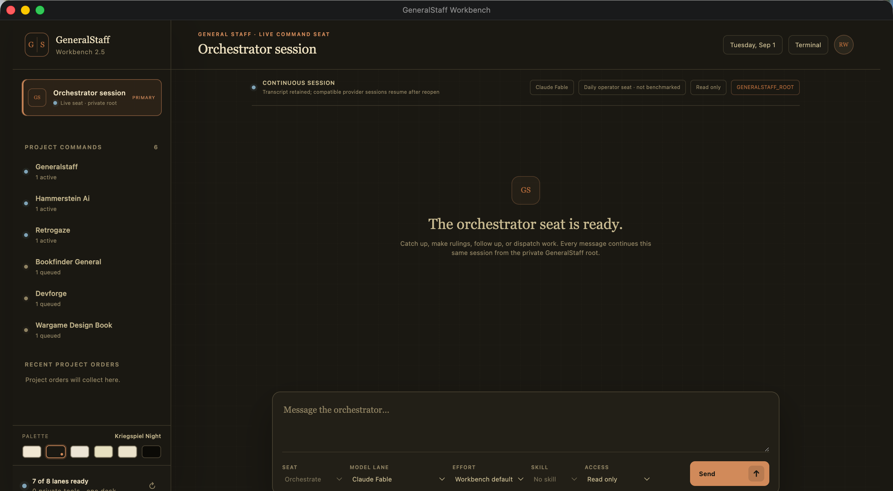
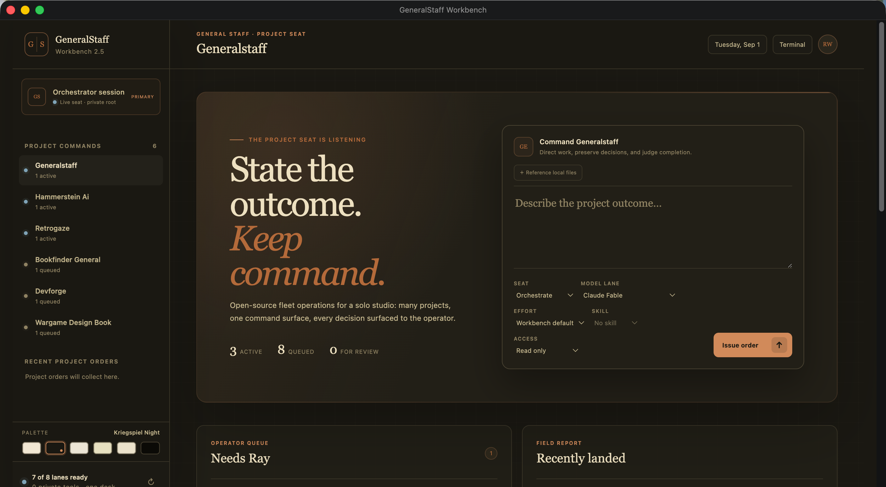
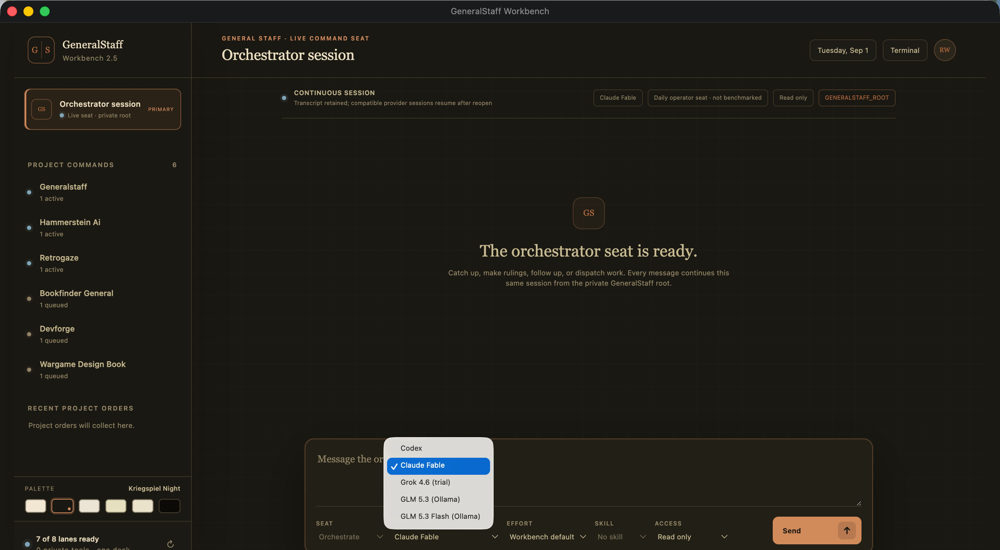
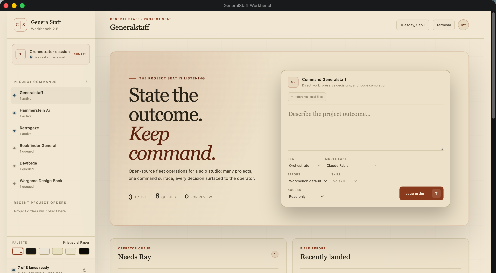

223
Changes verified · kept
Tests passed. Build clean. Claim matched reality.
GeneralStaff runs AI coding agents across your projects and enforces a hard verification gate. Every change runs against your source of truth before it is accepted. If tests fail, dependencies break, or a file drifts outside scope, the change is rejected automatically. You define the constraints. The tool enforces them. No programming required.

The model finishes a task, marks it green, and moves on. The change compiles but the feature doesn't work. The test was deleted instead of fixed. A function got stubbed out and forgotten. If you can't read the diff, you can't catch it.
GeneralStaff doesn't try to make the AI smarter. It puts a gate between the AI and your codebase. Nothing lands until the gate says so. When the gate says no, the work rolls back automatically — your branch stays clean.
The agent reads the task and writes down what "done" will mean — the assertion it expects to satisfy.
It edits files in an isolated workspace. Your branch is untouched while it tries, fails, retries.
Tests run. The build runs. Your custom rules run. The original claim is checked against reality.
The gate passes. The change is committed with the claim, the verification result, and a signature in the audit log.
The gate fails. The work is discarded, the reason recorded, and the agent gets another attempt — or hands back to you.
Through v0.7, GeneralStaff only ran the work you queued. Autonomous mode — opt-in, off by default — adds the step in front: it reads a project's real state (its mission, git history, open tasks), proposes concrete next work, and runs each proposal through the same gate. Keep or reject — and mechanical, or a call only you should make. The mechanical work it dispatches; the judgment calls it hands back.
Bot-safe work runs through the normal cycle and lands on a branch — gated and rolled back exactly like work you queued yourself. It never pushes or merges; the merge stays your call.
Anything that turns on taste, scope, money, or a live product isn't decided for you. It surfaces as a short list of decisions and waits.
GSD is the desktop app. It runs your fleet of projects, shows you what each session is doing right now, and lets you open any task to see exactly what landed (and what didn't).



Every accept and every reject is written down. You can read them. We do — GeneralStaff builds itself. Here's the running tally from the dogfooding repo:
GeneralStaff hands one model the job of routing work, reading receipts, and telling you what happened. That judgment is the product, so we measured it: 23 fixtures across seven duties, three runs each, 69 scored answers per seat. Three judges marked every answer blind, and none of them was a candidate.
So we are not publishing a winner. What separates cleanly is the tiers: four seats at the top we cannot tell apart, one seat six points back for no reason except how it was invoked, and a deliberate floor control far below both, there to prove the battery discriminates at all.
Work arrives. Where does it go, and when does the standing rule give the wrong answer?
A worker says it is done. Does the seat read the receipt, or repeat the claim?
Before reporting that something is missing, does it look in the second place?
When the news is bad, does the operator get the version that says so?
Running the same model at maximum reasoning effort instead of its command-line default moved it from 79.9 to 85.8, the difference between the second tier and the top one. Deciding went from 47.2 to 75.0, grounding from 75.0 to 91.7, verifying from 82.1 to 94.0.
It also cost. Mean latency rose from 32.7 seconds a row to 53.1, and long-context retrieval fell from 82.3 to 65.6. Each arm threw exactly one fabrication, effort or no effort. On the other seats the dial did nothing: one has a maximum tier that changed no score, and one has no dial at all.
One seat came back at 98.7, higher than anything else we ran. It was wrong, and we withdrew it.
A run recorded a reasoning level on 69 rows that the request never carried. A provider took a thinking toggle and returned the same four thousand reasoning tokens either way. A harness accepted a workspace argument that quietly granted more than it should. Each was a configuration string we believed because we had written it. Config strings are claims. Wire traffic is evidence.
The fixtures, the scored answers, the withdrawn run and the clean one are frozen with checksums.
GeneralStaff isn't a service. There's no account, no usage dashboard on some other company's server, no "your code will be used to improve our model." The app runs on your laptop and talks directly to the model provider you pick.
Native desktop app for macOS and Windows. Nothing about your work goes through us.
BYO Anthropic or OpenAI key. You see and pay your own usage, directly.
No subscription, no license fee. GeneralStaff is open source under AGPL-3.0 (free and open-source) — audit it, fork it, build it yourself.
Your source never passes through GeneralStaff-operated infrastructure — it goes only to the model providers you configure. The audit log lives in your repo.
The gate is on by default; you can turn it up, never down.
macOS (Apple silicon & Intel) and Windows.
Drag a folder in. GSD reads your tests and build the way you already run them.
Plain English. The gate enforces the rest. Watch what actually landed.